How I work
I connect design goals with engine-side prototypes: mechanics, level routes, dialogue structures, balance ideas, and player-facing feedback loops.
Game Designer | Technical Game Designer
I design gameplay systems, levels, narrative flows, and prototypes that turn design intent into something playable.
About
I connect design goals with engine-side prototypes: mechanics, level routes, dialogue structures, balance ideas, and player-facing feedback loops.
Gameplay systems, player psychology, behavioral design, level design, narrative systems, multiplayer interactions, engagement, and flow.
Spanish native. English professional proficiency.
Selected Work

3D platformer focused on exploration, collectables, traversal challenges, and difficulty progression.
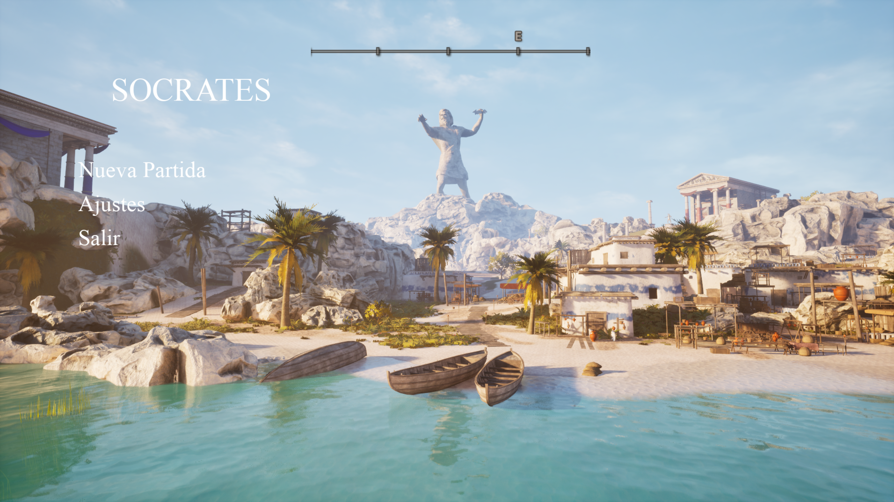
Narrative prototype focused on branching dialogue, quest flow, and player choices.
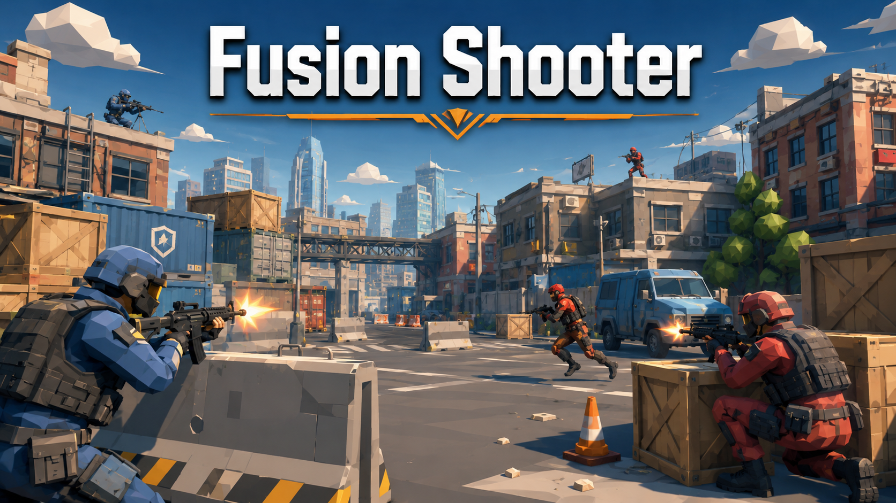
Online FPS prototype focused on synchronized movement and shooting systems.
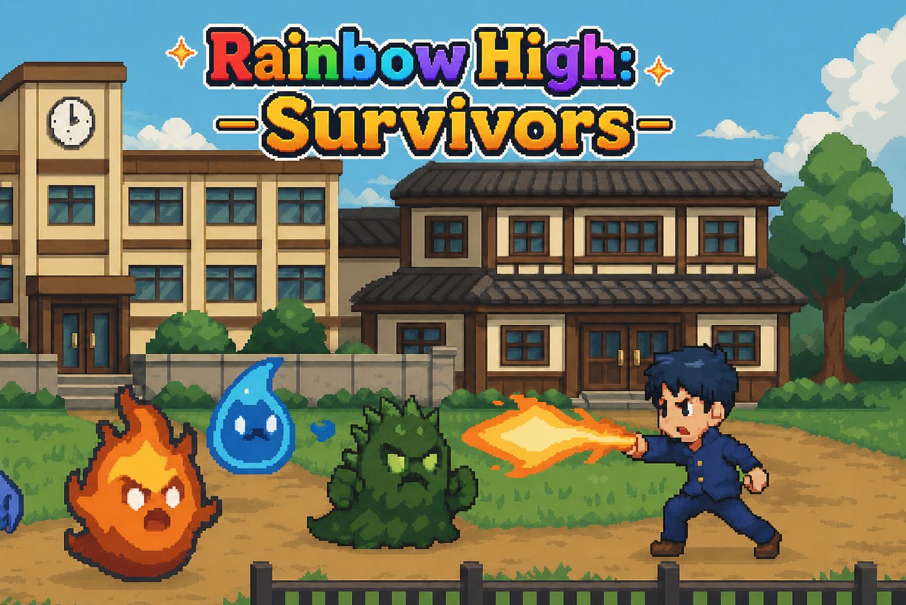
Roguelike shoot 'em up prototype with spawn waves, upgrades, combat loops, and difficulty scaling.
Project
Technical narrative prototype for choice-driven dialogue, quest structure, and interactive flow.
Designed branching conversation structure and implemented player-facing dialogue logic.
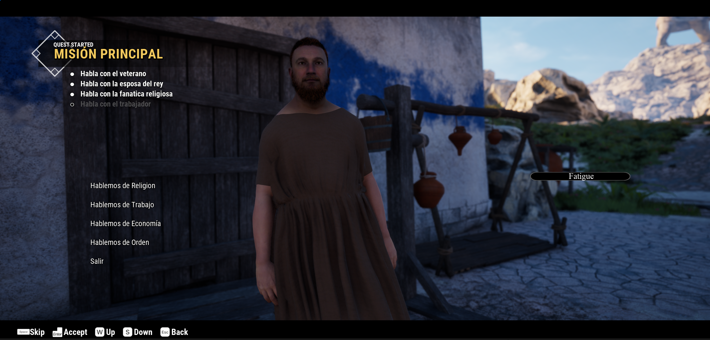
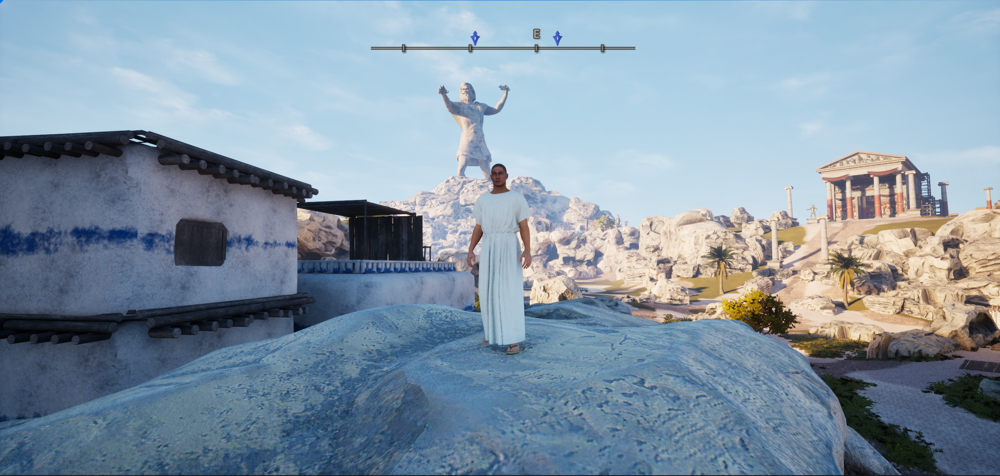
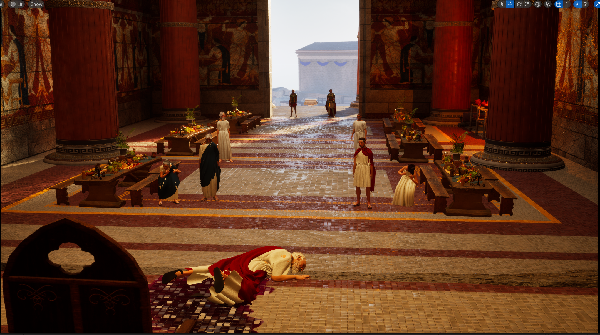
Project
Online FPS prototype focused on readable movement, shooting, and multiplayer sync.
Implemented Photon Fusion networking and synchronized player movement and combat interactions.
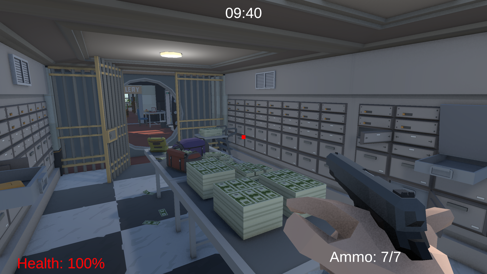
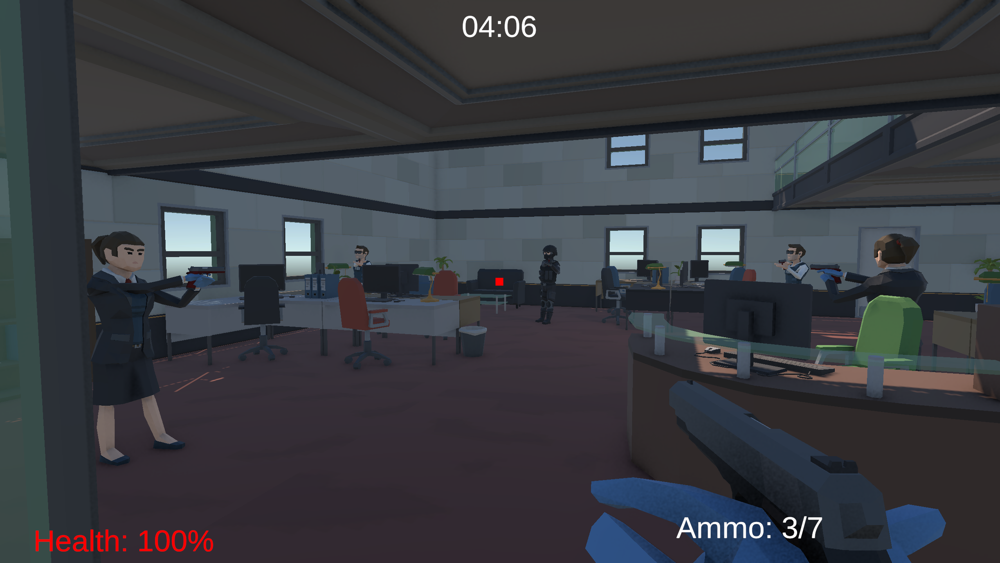
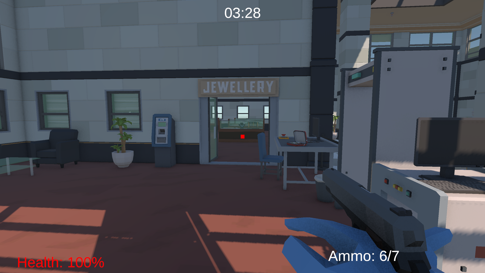
Project
Roguelike shoot 'em up prototype exploring pressure, pacing, upgrades, and enemy waves.
Programmed gameplay systems, enemy spawn behavior, and difficulty scaling in GDScript.
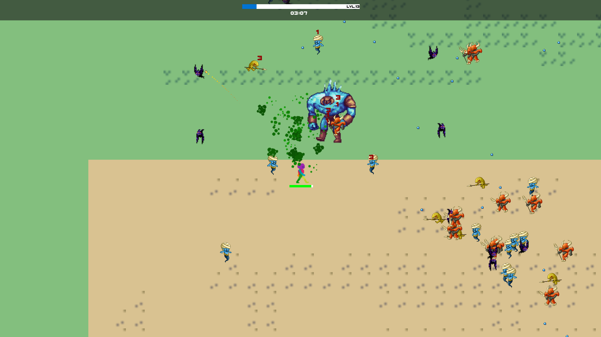
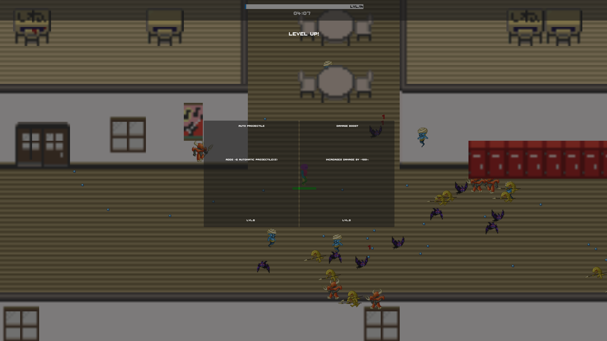
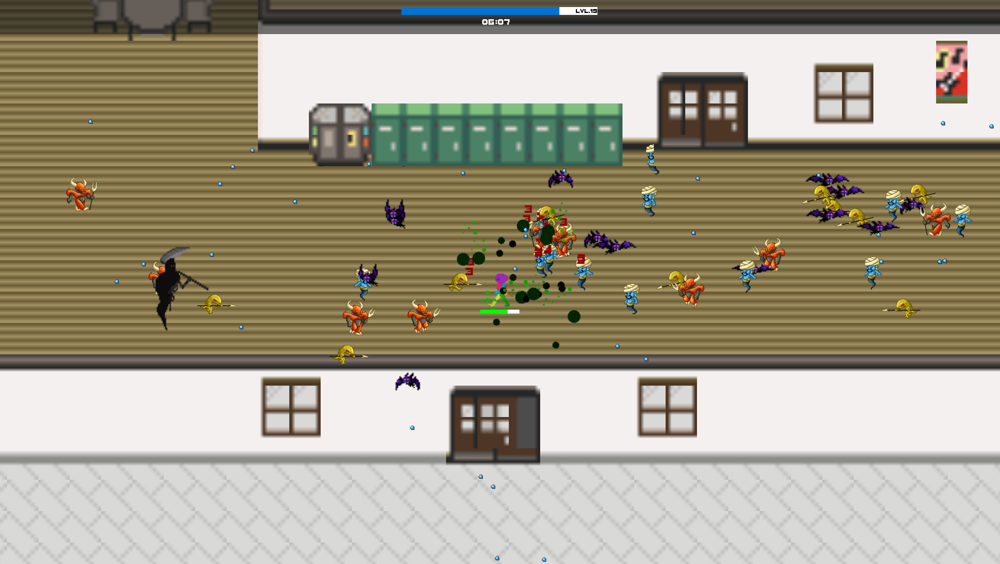
Project
3D platforming project centered on exploration, collectibles, and traversal challenges.
Designed platforming levels, traversal routes, obstacle patterns, and progression pacing.
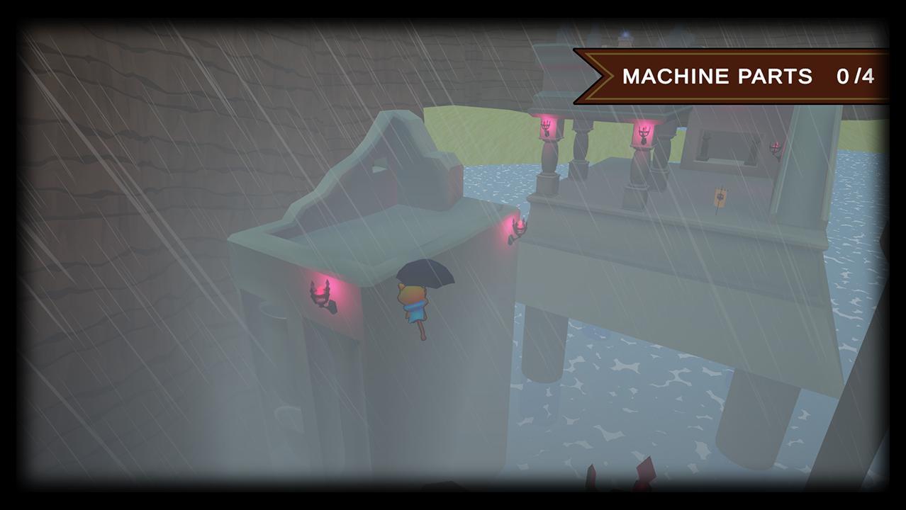
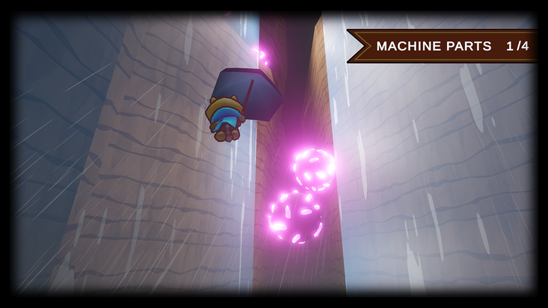
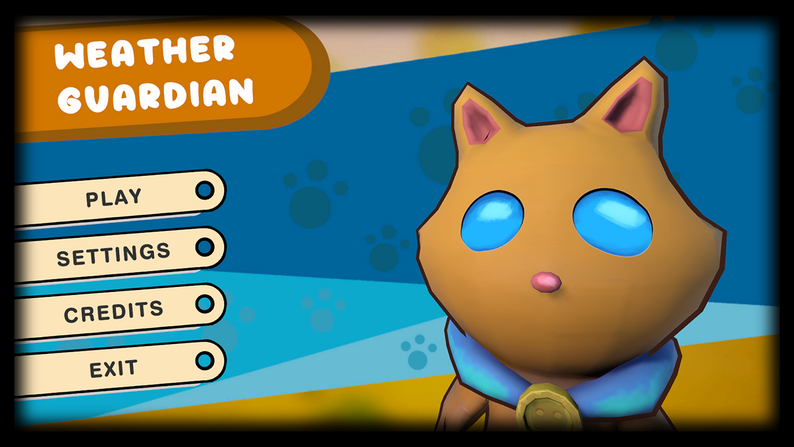
Archive
Capabilities
C#, C++, GDScript, Unreal Blueprints
Gameplay systems, level design, balancing, economy, documentation
Player psychology, behavioral design, engagement, flow, profiling
Unity, Unreal Engine, Godot
Claude, Codex, AI-assisted prototyping, workflow automation
Background
Image Campus
Image Campus
Player archetypes, motivation, conditioning, profiling, segmentation, Gestalt, GameFeel, engagement, and flow states.
Contact
Have a project, prototype, or design role to discuss? Send a message or reach me through any of these links.